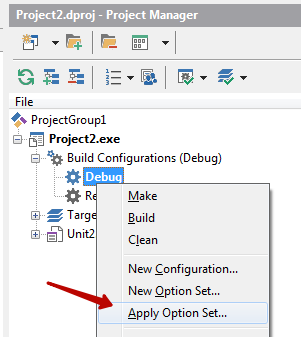

Конфигурации сборки Delphi во внешнем файле
При сборке исполняемого файла для тестирования и при сборке готовой версии для пользователей используются разные настройки компилятора. В Delphi для этого применяются конфигурации сборки. В этом посте описано как настроить хранение этих настроек во внешних файлах. Внешние файлы удобно использовать когда проектов много - настройка каждого отдельно занимает время, увеличивается вероятность ошибок, а если понадобятся изменения то придется обновить все проекты.
Описание подходит для Delphi 2010 и более новых версий. Общие рекомендации по настройке параметров компилятора в этой статьеopen in new window.
Список конфигураций находится в ветке Build Configurations в менеджере проекта.
Откроем настройки для просмотра подробностей


В новом проекте три конфигурации
Debug- для отладки и тестирования;Release- готовая версия;All configurations- родительская конфигурация для всех остальных конфигураций.
Конфигурации можно добавлять и у удалять (в том числе Debug и Release). Конфигурация All configurations не удаляемая, в ней указываются общие для всех конфигураций настройки.
В версиях Delphi которые это поддерживают, под отдельные платформы настраиваются свои конфигурации. Мне этим пользоваться не приходилось, поэтому в этом посте будет настроена конфигурация только под win32.
Создадим новый файл настроек для конфигурации Debug
Сохраним его рядом с файлом проекта в отдельный каталог
config/debug.optset
Теперь отредактируем его
Включим Oweflow checking и Range checking
Перейдем в редактор конфигурации Debug для проверки
Настройки перекрывают друг друга в следующей последовательности: самый низкой приоритет у родительской конфигурации All configurations, потом из подключенного файла debug.optset, потом настройки проекта.
Сейчас в проекте такая ситуация для Oweflow checking:
- В
All configurationsзначение не заданно (not set) - В
debug.optsetзначение True - В проекте значение неопределенно и берется из
dubug.optset(переопределенное значение выделяется жирным)
Создадим второй проект и подключим к нему конфигурацию из внешнего файла.

Путь к файлу получается выбрать только полный, но в настройках проекта сохраняется относительный. Поэтому проблем при хранении файла конфигурации в системе контроля версий не будет.
Теперь при изменении настроек в optset они автоматически изменятся во всех связанных проектах.
Проверим это. Изменим в файле debug.optset строку
true
на
false
Теперь открываем настройки любого проекта и видим что значение изменилось. В некоторых версиях Delphi старое значение отображается до перезапуска IDE.